Chapter 5 Wykresy - pakiet ggplot2
##
## If anything, there should be a Law: Thou Shalt Not Even Think Of Producing A
## Graph That Looks Like Anything From A Spreadsheet.
## -- Ted Harding (in a discussion about producing graphics)
## R-help (August 2007)Do tworzenia wykresów można użyć kilku pakietów:
graphics - podstawowy pakiet graficzny instalowany razem z R, pełna kontrola nad wyglądem wykresu, ale często wymaga to więcej pracy niż w innych pakietach. Przydatny jeżeli chcemy coś szybko sprawdzić, a nie interesuje nas wygląd wykresu, niektóre wykresy można stworzyć tylko w tym pakiecie
lattice - umożliwia łatwe tworzenie kilku wykresów na raz np. do porównania różnych cech, ale obecnie mniej popularny niż np. ggplot2
ggplot2 - jeden z najpopularniejszych pakietów R i mój ulubiony do przygotowywania wykresów. Oparty na grammar of graphics. Przygotowanie “ładnych” wykresów wymaga mniej pracy niż w podstawowym, ale składnia jest znacząco różna. Łatwe porównywanie i tworzenie kilku wykresów na jednym obrazku
plotly - pozwala na tworzenie interaktywnych wykresów np. do wykorzystania na stronach www lub w shiny. Pakiet ggplotly umożliwia konwersję wykresów ggplot do postaci interaktywnej
Wykresy w ggplot2 składają się z kilku elementów: data, aesthetics, geom, scale, facet, theme itd.
Pierwsze trzy są niezbędne do przygotowania wykresu.
Poszczególne elementy można ze sobą łączyć na różne sposoby, co pozwala w prosty sposób robić bardzo różne wykresy.
Podstawowa funkcja : ggplot(). W niej określany jest tylko data i aesthetic, pozostałe elementy dodawane są przy pomocy +
data - określa ramkę danych, na podstawie której będzie przygotowany wykres, najlepiej żeby była w formacie ‘tidy’
aesthetics (aes) - pokazuje (mapuje), które kolumny mają być wykorzystane np. x=kolumna_1 dla histogramu, można też określać pod względem których zmiennych dane mają zostać pogrupowane (group), rozróżnione (color, fill, shape itp) np. aes(x = kolumna_1, color = kolumna_2) znaczy że dane z kolumny_1 zostaną wykorzystane do stowrzenia osi X, a dane z kolumny_2 posłużą do stowrzenia skali kolorów.
geom - rodzaj wykresu - to co widzimy - np histogram, density, bar, boxplot, point, line itp., można użyć kilka jednocześnie np. point i line, histogram i density
scale - osie wykresu np. czy mają być logarytmiczne, procentowe, miejsce start i koniec, ale też skale kolorów, wypełnienia, kształtów itp.
facet - umożliwia podział wykresu na kilka mniejszych pod względem danej zmiennej
theme - wygląd poszczególnych elementów wykresu (motyw) np. czcionki, rodzaj linii, kolor tła, legenda itp., istnieje sporo już przygotowanych. Można przygotować własny i zapisać - łatwo można zrobić kilka wykresów w jednym stylu
Istnieje również funkcja qplot, która jest podobna do funkcji plot w podstawowym R, ale jej możliwości są uboższe w porównaniu z ggplot.
Wykresy ggplot są przypisywane do zmiennych np p <- ggplot(...), zmienna p przechowuje wszystkie dane dotyczące wykresu. Możemy je sprawdzić funkcją summary. Dodanie kolejnych elementów do wykresu np. p + geom_point(), jeżeli chcemy nadpisać dotychczasowy wykres - p <- p + geom_point(). Korzystając z + możemy dodawać tyle elementów ile chcemy.
5.1 Używane dane
Jako przykładowe dane wykorzystane zostanie tabela penguis dostępna w pakiecie palmerpenguins. Tabela zawiera dane dotyczące 344 pingwinów należących do trzech gatunków, obserwowanych na wyspach archipelagu Palmer.
5.2 Histogram, boxplot i inne
5.2.1 Histogram i density
library(palmerpenguins) # ładowanie pakietu z danymi
library(ggplot2) # ładowanie pakietu ggplot2
library(dplyr)
library(tidyr)
theme_set(theme_bw()) # żeby wszystkie wykresy miały białe tło, a nie szare - będzie o tym później# histogram
p <- ggplot(data = penguins, aes(x = body_mass_g))
p + geom_histogram()## `stat_bin()` using `bins = 30`. Pick better value with `binwidth`.## Warning: Removed 2 rows containing non-finite values (stat_bin).Dla histogramu najważniejszy parametr to binwidth określający szerokość “słupków.”
Możemy też wybrać czy chcemy żeby były zliczane ilości elementów (domyślnie), czy ma być pokazana gęstość rozkładu - w aes należy wpisać y=..density.. albo procenty y=((..count..)/sum(..count..))*100 (w przypadku procentów lepiej jednak policzyć je wcześniej i podać już gotowe wartości do ggplot, w bardziej skomplikowanych przypadkach ggplot może sobie nie poradzić). Do dodania znaków % potrzebna jest zmiana parametrów osi, o tym później.
Można też zmienić kolor wypełnienia słupków - fill lub kolor linii - color.
p + geom_histogram(binwidth = 50)## Warning: Removed 2 rows containing non-finite values (stat_bin).
# Histogram z gęstością na osi Y
p + geom_histogram(binwidth = 50, aes(y = ..density..))## Warning: Removed 2 rows containing non-finite values (stat_bin).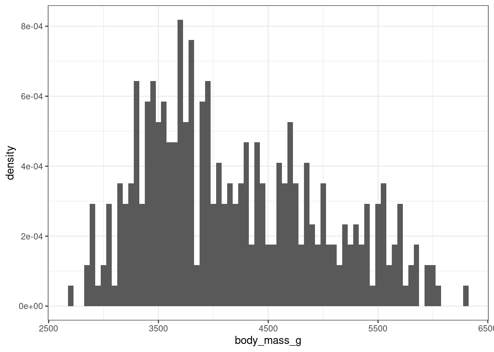
# Histogram z wartością % na osi Y
p + geom_histogram(binwidth = 50, aes(y = ((..count..)/sum(..count..)*100)))## Warning: Removed 2 rows containing non-finite values (stat_bin).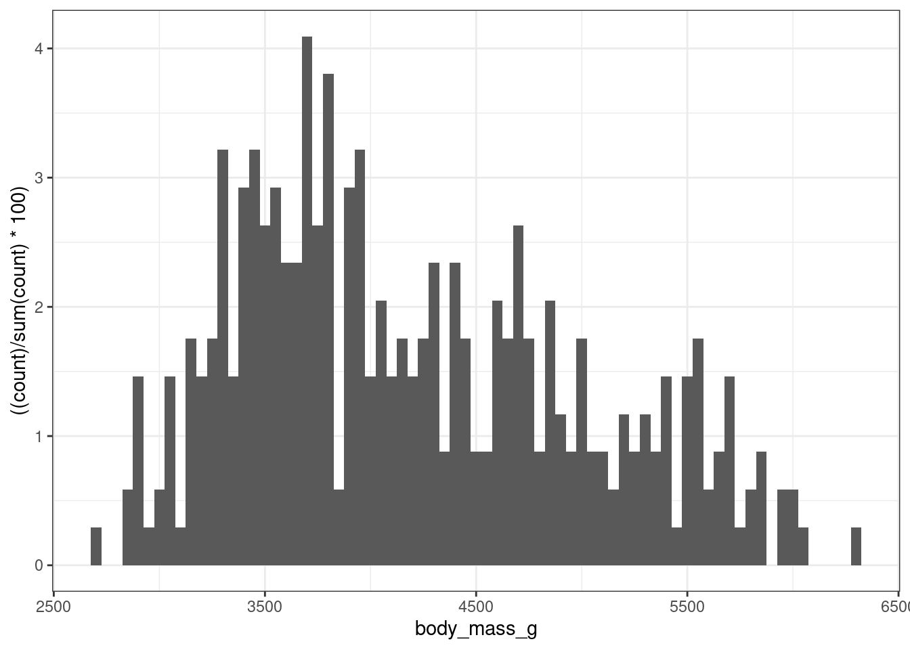
# Zmiana koloru wypełnienia histogramu
p + geom_histogram(binwidth = 50, aes(y = ..density..),
fill = "lightgreen", color = "black")## Warning: Removed 2 rows containing non-finite values (stat_bin).# Dodanie wszystkich obserwacji do wykresu - geom_rug()
p + geom_histogram(binwidth = 50, aes(y = ..density..),
fill = "lightgreen", color = "black")+
geom_rug()## Warning: Removed 2 rows containing non-finite values (stat_bin).Histogram możemy łatwo zmienić na geom_density (gęstość) albo połączyć oba na jednym wykresie (należy pamiętać żeby ujednolicić oś Y - w histogramie ustawić y=..density.. albo w density y = ..count..)
Wykresy gęstości są dużo czytelniejsze od histogramów przy większej liczbie grup/kolorów na wykresie.
p + geom_density()## Warning: Removed 2 rows containing non-finite values (stat_density).# Wykres łączący histogram i gęstość
p + geom_histogram(binwidth = 50, aes(y = ..density..))+
geom_density(color = "red")## Warning: Removed 2 rows containing non-finite values (stat_bin).
## Warning: Removed 2 rows containing non-finite values (stat_density).# albo tak, ale wtedy trzeba count w density podzielić lub pomnożyć przez konkretną liczbę, lepiej dobrać indywidualnie do każdego wykresu (dobry początek to ustawiony binwidth)
p + geom_histogram(binwidth = 50)+
geom_density(color = "red", aes(y = ..count..*50))## Warning: Removed 2 rows containing non-finite values (stat_bin).
## Warning: Removed 2 rows containing non-finite values (stat_density).# Zamiast density można też użyć geom_freqpoly, który da bardziej "kanciasty" wykres
# Wymaga parametru binwidth tak samo jak histogram
p + geom_freqpoly(binwidth = 50)## Warning: Removed 2 rows containing non-finite values (stat_bin).
5.2.2 Wykres pudełkowy - boxplot
Na wykresie pudełkowym linia obrazuje medianę, pudełko to przestrzeń między 1 i 3 kwantylem, wąsy to zakres danych, a wszystkie punkty to obserwacje odstające.
Zamiast histogramu możemy zrobić boxplot, w tym wypadku x to nazwa szczepu, a y to mierzona cecha. Na osi X należy zawsze umieszczać zmienną jakościową, a na osi Y zmienną ilościową
# pojedynczy boxplot
p <- ggplot(data = penguins, aes(x = "masa", y = body_mass_g))
p + geom_boxplot()## Warning: Removed 2 rows containing non-finite values (stat_boxplot).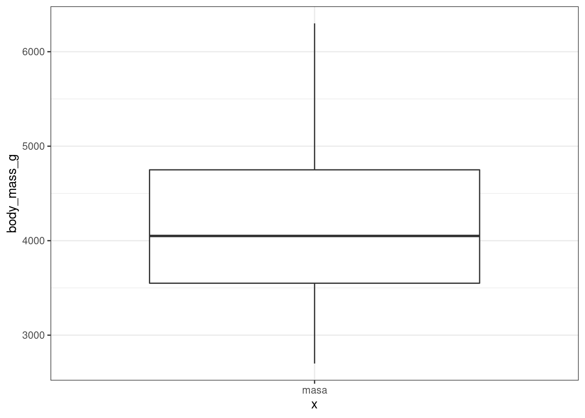
# boxplot dla każdej kategorii
p <- ggplot(data = penguins, aes(x = species, y = body_mass_g))
p + geom_boxplot()## Warning: Removed 2 rows containing non-finite values (stat_boxplot).
# do boxplota można dodać wcięcia, jeżeli wcięcia dwóch boxplotów na siebie nie zachodzą
# można uznać że mediany tych dwóch grup są od siebie znacząco różne
p + geom_boxplot(notch = TRUE)## Warning: Removed 2 rows containing non-finite values (stat_boxplot).5.2.3 Wykres skrzypcowy
Odmianą boxplotów są tzw. wykresy skrzypcowe, które pozwalają też na pokazanie kształtu rozkładu - pozwala to np. na wykrycie rozkładu, który ma dwa maksima. W ggplot2 można je wygenerować funkcją geom_violin.
p <- ggplot(data = penguins, aes(x = species, y = body_mass_g))
p + geom_violin(aes(color = factor(island)))## Warning: Removed 2 rows containing non-finite values (stat_ydensity).# przykładowe dane
dane <- data.frame(x = c(rnorm(100), rnorm(100, 3), rnorm(100, 1), rnorm(100, 5)),
faktor = rep(c("A", "B"), each = 200))
p <- ggplot(data = dane, aes(y = x, x = faktor, fill = faktor))
p + geom_violin()# nie przyciety wykres
p + geom_violin(trim=FALSE)
5.2.4 Dodanie wszystkich obserwacji do boxplot/violin
Dobrą praktyką jest przy używaniu wykresów pudełkowych lub skrzypcowych pokazanie wszystkich uzyskanych obserwacji (o ile nie ma ich za dużo). Można w tym celu użyć funkcji geom_jitter albo ładniejszych geom_beeswarm i geom_quasirandom z pakietu ggbeeswarm.
Przy pomocy argumentu alpha można kontrolować przezroczystość punktów - przydatne gdy jest ich dużo.
# Boxplot dla każdego gatunku
p <- ggplot(data = penguins, aes(x = species, y = body_mass_g))
p + geom_boxplot(aes(color = species))+
geom_jitter(aes(color = species), alpha = 0.2)## Warning: Removed 2 rows containing non-finite values (stat_boxplot).## Warning: Removed 2 rows containing missing values (geom_point).
# usuwamy punkty pochodzące od boxplota
p + geom_boxplot(aes(color = species), outlier.alpha = 0)+
geom_jitter(aes(color = species), alpha = 0.2)## Warning: Removed 2 rows containing non-finite values (stat_boxplot).
## Warning: Removed 2 rows containing missing values (geom_point).# beeswarm
library(ggbeeswarm)
p + geom_boxplot(aes(color = species), outlier.alpha = 0)+
geom_beeswarm(aes(color = species), alpha = 0.2)## Warning: Removed 2 rows containing non-finite values (stat_boxplot).## Warning: Removed 2 rows containing missing values (position_beeswarm).# quasirandom
p + geom_boxplot(aes(color = species), outlier.alpha = 0)+
geom_quasirandom(aes(color = species), alpha = 0.2)## Warning: Removed 2 rows containing non-finite values (stat_boxplot).## Warning: Removed 2 rows containing missing values (position_quasirandom).# quasirandom + geom_violin
p <- ggplot(data=penguins, aes(x = species, y = body_mass_g))
p + geom_violin(aes(color = factor(island)))+
geom_quasirandom(aes(color = factor(island)),
dodge.width = 0.9, # pozwala na rozdział kolorów na grupy
alpha = 0.1)## Warning: Removed 2 rows containing non-finite values (stat_ydensity).
## Warning: Removed 2 rows containing missing values (position_quasirandom).Można też połączyć wszystko w całość korzystając z dodatkowych pakietów ggdist i gghalves, na podstawie strony: visualizing-distributions-with-raincloud-plots-with-ggplot2
ggplot(penguins, aes(x = species, y = body_mass_g, color = species, fill = species)) +
ggdist::stat_halfeye(
adjust = .75,
width = .6,
.width = 0,
justification = -.2,
point_colour = NA
) +
geom_boxplot(
width = .15,
outlier.shape = NA,
alpha = 0.2
) +
## add justified jitter from the {gghalves} package
gghalves::geom_half_point(
## draw jitter on the left
side = "l",
## control range of jitter
range_scale = .4,
## add some transparency
alpha = .3
) ## Warning: Removed 2 rows containing missing values (stat_slabinterval).## Warning: Removed 2 rows containing non-finite values (stat_boxplot).## Warning: Removed 2 rows containing non-finite values (stat_half_point).
5.2.5 Dotplot
Wykres, na którym obserwacje są zaznaczane jako punkty, może być alternatywą dla histogramu albo gęstości jeżeli mamy małą liczbę danych. Punkty mogą być układane na którejś z osi albo wyśrodkowane. Podobnie jak w histogramie możemy określić parametrem binwidth jak mają być ułożone punkty.
dane_dot <- data.frame(pomiar = c(rnorm(20), rlnorm(20), runif(20)),
kategoria = rep(c("A","B","C"), each = 20))
p <- ggplot(dane_dot)
p + geom_dotplot(aes(x = pomiar))## Bin width defaults to 1/30 of the range of the data. Pick better value with `binwidth`.p + geom_dotplot(aes(x = pomiar), binwidth = 0.25)# możemy kropki pokolorować według kategorii,
# konieczne parametry stackgroups=TRUE i binpositions="all"
p + geom_dotplot(aes(x = pomiar, fill = kategoria), binpositions = "all", stackgroups = TRUE)## Bin width defaults to 1/30 of the range of the data. Pick better value with `binwidth`.# albo przedstawić każdą kategorię osobno, binaxis określa w jakim kierunku układać kropki,
# stackdir czy mają być wyśrodkowane - center lub centerwhole
p + geom_dotplot(aes(y = pomiar, x = kategoria), stackdir = "center", binaxis = "y", binwidth = 0.2)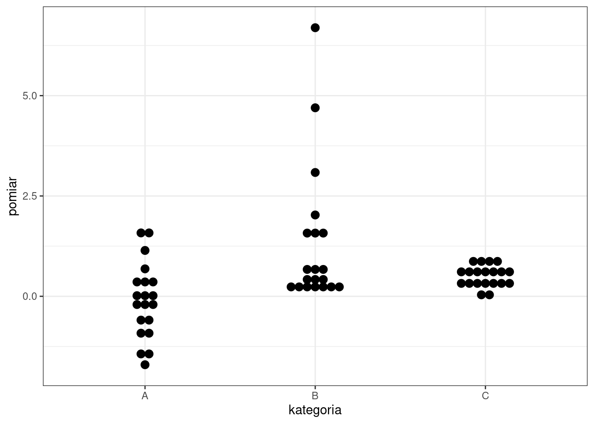
# zmiana wielkości kropki przez dotsize
p + geom_dotplot(aes(y = pomiar, x = kategoria), stackdir = "center", binaxis = "y",
binwidth = 0.2, dotsize = 0.75)# można też wybrać metodę układania kropek, domyślnie wedle gęstości,
# podobnie jak histogram - method="histodot"
p + geom_dotplot(aes(y = pomiar, x = kategoria), stackdir = "center", binaxis = "y",
binwidth = 0.2, dotsize = 0.75, method = "histodot")5.3 Barplot - wykres słupkowy
Szybkie zliczenie elementów w poszczególnych grupach możemy wykonać stosując funkcję table. Wystarczy podać jej kolumnę z danymi oraz kolumny zawierające wektory według których dane mają zostać podzielone na grupy. Wynikiem table nie jest ramka danych, więc bez przekształcenia nie można go użyć do przygotowania wykresu ggplot.
# dla jednej zmiennej
table(penguins$species)##
## Adelie Chinstrap Gentoo
## 152 68 124# dla większej liczby zmiennych
table(penguins$island, penguins$species, penguins$sex)## , , = female
##
##
## Adelie Chinstrap Gentoo
## Biscoe 22 0 58
## Dream 27 34 0
## Torgersen 24 0 0
##
## , , = male
##
##
## Adelie Chinstrap Gentoo
## Biscoe 22 0 61
## Dream 28 34 0
## Torgersen 23 0 0Można zauważyć, że funkcja table, w przeciwieństwie do summary pominęła wartości oznaczone jako NA. Można to zmienić używając parametr useNA.
table(penguins$island, penguins$species, penguins$sex, useNA = 'ifany')## , , = female
##
##
## Adelie Chinstrap Gentoo
## Biscoe 22 0 58
## Dream 27 34 0
## Torgersen 24 0 0
##
## , , = male
##
##
## Adelie Chinstrap Gentoo
## Biscoe 22 0 61
## Dream 28 34 0
## Torgersen 23 0 0
##
## , , = NA
##
##
## Adelie Chinstrap Gentoo
## Biscoe 0 0 5
## Dream 1 0 0
## Torgersen 5 0 0Wykres słupkowy wymaga użycia geom_bar. Zasady rozróżniania zmiennych według kolorów i dzielenia wykresów na części pozostają takie same.
Domyślnie również wartości NA zostaną wzięte pod uwagę podczas zliczania. Jeżeli chcemy temu zapobiec, należałoby np. usunąć je wcześniej przy pomocy funkcji filter.
p <- ggplot(data = penguins, aes(x = island, fill = species))
# Słupki ustawione obok siebie
p + geom_bar(position = "dodge") + facet_wrap(~ sex)
# Wszystkie słupki tej samej wysokości
p + geom_bar(position = "fill") + facet_wrap(~ sex)# Szerokość słupków można zmieniać parametrem width
p + geom_bar(position = "dodge", width = 0.4) + facet_wrap(~ sex)# Wykres bez wartości NA, filter można zrobić też wcześniej albo w obrębie ggplot
p <- ggplot(penguins %>% filter(!is.na(sex)), aes(x = island, fill = species))
p + geom_bar(position = "dodge") + facet_wrap(~ sex)Przy dużej ilości różnokolorowych słupków wykres może być trudny do odczytania. Można wtedy rozważyć zastosowanie dotchart - czyli wykresu na którym wartości zliczenia są oznaczane przez pojedyncze punkty, a nie przez wysokość słupków. W ggplot2 do zrobienia dotchart możemy użyć geom_point
# Ustawiamy stat="bin" - oznacza że ggplot ma zliczyć częstości występowania elementów,
# a nie narysować każdy z osobna i obracamy wykres - ułatwia odczytanie
p + geom_point(size=3, stat='count', aes(color=species))+
facet_wrap(~sex)+coord_flip()Nasze dane mogą też zawierać wysokości słupków. W takim wypadku należy użyć geom_col
x <- data.frame(x = c(2, 6, 3, 8, 9), name = c("A", "B", "C", "D", "E"))
p <- ggplot(data = x, aes(x = name, y = x))
p + geom_col(aes(fill = name))5.4 Średnia, mediana itp. na wykresie
5.4.1 Stat_summary
Możemy również potrzebować wykres z zaznaczoną średnią i przedziałem ufności albo błędem standardowym.
W takim wypadku możemy sami policzyć te wartości, a następnie pokazać je używając geom_pointrange albo geom_crossbar.
Można też wykorzystać stat_summary, który policzy je za nas.
W stat_summary najważniejszym argumentem jest funkcja jaką zastosujemy do podsumowania danych. Może to być albo fun.y - należy podać funckję, której wynikiem jest jedna wartość np. mean, median, sd albo fun.data - należy podać funkcję, której wynikiem jest więcej wartości np. mean_cl_boot i mean_cl_normal policzą średnią i przedział ufności. Należy też dobrać odpowiedni geom: dla jednej wartości np. point albo line, dla większej: linerange, crossbar, pointrange, errorbar.
p <- ggplot(data = penguins, aes(x = species, y = body_mass_g, color = species))
# Wykres tylko z wartością średnią
p + stat_summary(fun = "mean", geom = "point", size = 3)+
facet_wrap(~ sex, ncol = 2)## Warning: Removed 2 rows containing non-finite values (stat_summary).# Wykres ze średnią i przedziałem ufności policzonym metodą bootstrap
p + stat_summary(fun.data = "mean_cl_boot")+
facet_wrap(~ sex, ncol = 2)## Warning: Removed 2 rows containing non-finite values (stat_summary).5.4.2 Summary z użyciem dplyr
Do samodzielnego policzenia średnich możemy wykorzystać pakiet dplyr. Pozwala on m.in. na szybkie tworzenie podsumowań danych ze względu na zmienne np. różne szczepy.
Najpierw dane są dzielone na grupy, następnie każda grupa jest poddawana działaniu pewnej funkcji lub kilku funkcji, a wynik jest zapisywany do nowej ramki danych.
W pakiecie dplyr pierwszym krokiem jest podział na grupy - group_by i potem przekazania wyniku do funkcji summarize.
library(dplyr)
summ <- penguins %>% group_by(species, sex) %>%
summarize(mean = mean(body_mass_g), odch = sd(body_mass_g),
blad = odch/sqrt(length(body_mass_g)),
lower = mean-blad,
upper = mean+blad)## `summarise()` has grouped output by 'species'. You can override using the `.groups` argument.summ## # A tibble: 8 × 7
## # Groups: species [3]
## species sex mean odch blad lower upper
## <fct> <fct> <dbl> <dbl> <dbl> <dbl> <dbl>
## 1 Adelie female 3369. 269. 31.5 3337. 3400.
## 2 Adelie male 4043. 347. 40.6 4003. 4084.
## 3 Adelie <NA> NA NA NA NA NA
## 4 Chinstrap female 3527. 285. 48.9 3478. 3576.
## 5 Chinstrap male 3939. 362. 62.1 3877. 4001.
## 6 Gentoo female 4680. 282. 37.0 4643. 4717.
## 7 Gentoo male 5485. 313. 40.1 5445. 5525.
## 8 Gentoo <NA> NA NA NA NA NAp <- ggplot(data = summ, aes(x = species, y = mean, ymin = lower, ymax = upper,
color = species)) + facet_wrap(~ sex, ncol = 2)
# Wykres ze średnią i błędem standardowym
p + geom_pointrange()## Warning: Removed 2 rows containing missing values (geom_pointrange).p + geom_crossbar(width = 0.5)## Warning: Removed 2 rows containing missing values (geom_crossbar).
p + geom_errorbar(width = 0.5, color = "black") + geom_point()## Warning: Removed 2 rows containing missing values (geom_point).# Z wykresem przedstawiającym średnie można postąpić tak samo jak z boxplotem
p <- ggplot(data = summ, aes(x = species, y = mean, ymin = lower, ymax = upper,
color = sex))
p + geom_crossbar(width = 0.5, position = "dodge")## Warning: Removed 2 rows containing missing values (geom_crossbar).# Jeżeli średnie połączymy za pomocą linii otrzymamy wykres interakcji opisany w dalszej części
p <- ggplot(data = summ, aes(x = species, y = mean, color = sex))
p + geom_point() + geom_line(aes(group = sex))## Warning: Removed 2 rows containing missing values (geom_point).## Warning: Removed 2 row(s) containing missing values (geom_path).5.4.3 Słupki błędów
W publikacja często spotyka się wykresy słupkowe z dodanym słupkiem błędu. Podobny efekt w ggplot2 można uzyskać przy pomocy geom_errorbar albo geom_linerange. Należy w aes podać dolną i górną granicę słupka. Jednak jeżeli słupki pochodzą np. z trzech powtórzeń danego eksperymentu to może lepiej byłoby je zaznaczyć w postaci kropek z przedziałem ufności niż rysować słupki.
Wartość średnią i ewentualny błąd standardowy albo przedział ufności możemy policzyć sami albo wykorzystać w tym celu stat_summary.
# Przykładowe dane
dane <- data.frame(kontrola = c(3,7,6), eksp_1 = c(5,9,7.5), eksp_2 = c(3,1,6), eksp_3 = c(10,11,8), eksp_4 = c(1,12,4))
# przechodzimy do formatu tidy
library(tidyr)
dane %>% pivot_longer(cols = everything(), names_to = 'key', values_to = 'value') -> dane
head(dane)## # A tibble: 6 × 2
## key value
## <chr> <dbl>
## 1 kontrola 3
## 2 eksp_1 5
## 3 eksp_2 3
## 4 eksp_3 10
## 5 eksp_4 1
## 6 kontrola 7# liczymy średnią i np. błąd standardowy
podsumowanie <- dane %>% group_by(key) %>%
summarize( srednia = mean(value),
odchylenie = sd(value),
dolny = srednia-(odchylenie/sqrt(length(value))),
gorny = srednia+(odchylenie/sqrt(length(value))))
# Wykres słupkowy z zaznaczonym błędem standardowym
p <- ggplot(data = podsumowanie)
p + geom_col(aes(x = key, y = srednia), fill = "lightblue3")+
geom_errorbar(aes(ymin = dolny, ymax = gorny, x = key), width = 0.2)
p + geom_col(aes(x = key, y = srednia), fill = "lightblue3")+
geom_linerange(aes(ymin = dolny, ymax = gorny, x = key))# Wykres punktowy wyników z zaznaczonym błędem standardowym
p + geom_point(data = dane, aes(x = key, y = value))+
geom_pointrange(aes(x = key, ymin = dolny, ymax = gorny, y = srednia), col = "red2")p + geom_point(data = dane, aes(x = key, y = value))+
geom_crossbar(aes(x = key, ymin = dolny, ymax = gorny, y = srednia), col = "red2", width = 0.25)p + geom_point(data = dane, aes(x = key, y = value))+
geom_errorbar(aes(x = key, ymin = dolny, ymax = gorny, y = srednia), col = "red2", width = 0.25)5.5 Wykres punktowy i liniowy
Do przedstawienia wykresu liniowego użyjemy zbioru danych ChickWeight, który zawiera wagę kurczaków karmionych różnymi rodzajami karmy
Zacznijmy od pojedynczego kurczaka
Dla geom_point albo geom_line konieczne jest w aes podanie x i y.
chick <- filter(ChickWeight, Chick == "1")
p <- ggplot(data = chick, aes(x = Time, y = weight))
p + geom_point()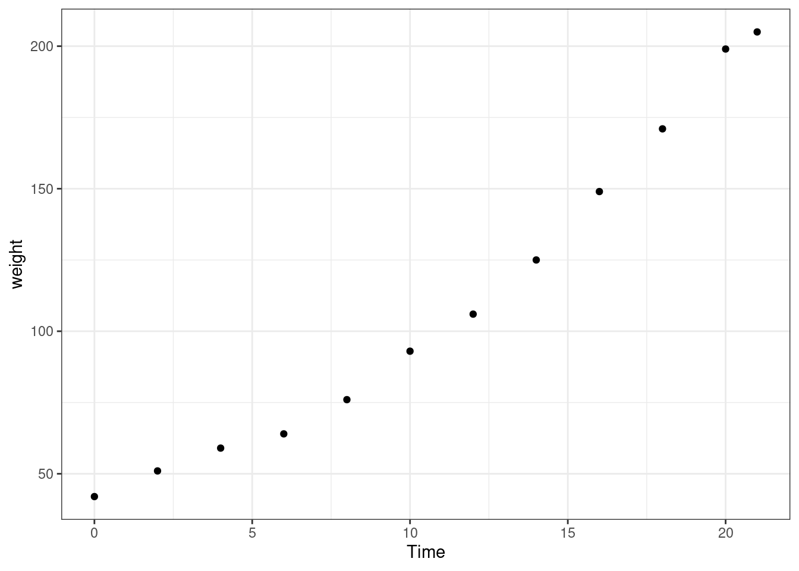
p + geom_line()
5.5.1 Dopasowanie linii trendu do wykresu punktowego
Zamiast rysować linię, możemy dopasować do wyników linię trendu (może być też inna niż liniowa np. logarytmiczna, kwadratowa, ograniczają nas tylko umiejętności pisania formuł w R ;)). Dopasowanie wykona stat_smooth. Domyślnie dopasuje linię do danych korzystając z własnego algorytmu (loess - lokalne wygładzanie wielomianami niskich stopni ;)), który ma za zadanie uzyskać jak najlepsze dopasowanie do danych, zaznaczy również przedział ufności. Możemy narzucić własną metodę i formułę.
# metoda loess
p + geom_point() + stat_smooth()## `geom_smooth()` using method = 'loess' and formula 'y ~ x'
# metoda lm - dopasowanie do linii prostej
p + geom_point() + stat_smooth(method = "lm")## `geom_smooth()` using formula 'y ~ x'# metoda lm z podaną formułą
p + geom_point() + stat_smooth(method = "lm", formula = y~sqrt(x))+
stat_smooth(method = "lm", color = "red")## `geom_smooth()` using formula 'y ~ x'Sprawdzenie dopasowania można wykonać funkcją lm. Jej summary podaje wartośc R^2, istotność, parametry wzoru(coefficients).
summary(lm(weight ~ Time, data = chick))##
## Call:
## lm(formula = weight ~ Time, data = chick)
##
## Residuals:
## Min 1Q Median 3Q Max
## -14.3202 -11.3081 -0.3444 11.1162 17.5346
##
## Coefficients:
## Estimate Std. Error t value Pr(>|t|)
## (Intercept) 24.4654 6.7279 3.636 0.00456 **
## Time 7.9879 0.5236 15.255 2.97e-08 ***
## ---
## Signif. codes: 0 '***' 0.001 '**' 0.01 '*' 0.05 '.' 0.1 ' ' 1
##
## Residual standard error: 12.29 on 10 degrees of freedom
## Multiple R-squared: 0.9588, Adjusted R-squared: 0.9547
## F-statistic: 232.7 on 1 and 10 DF, p-value: 2.974e-08# dodanie tekstu do wykresu np. równanie opisujące linię trendu
p + geom_point() + stat_smooth(method = "lm", color = "red")+
geom_text(data = NULL, x = 15, y = 50, label = "y = ax + b", size = 5) # x, y - położenie na wykresie, label - tekst, który ma zostać wpisany## `geom_smooth()` using formula 'y ~ x'
Możemy zastosować stat_smooth dla wszystkich danych.
geom_point można rozróżniać pod względem: color, shape, size, a geom_line pod względem: color i linetype.
p <- ggplot(data = ChickWeight, aes(x = Time, y = weight, color = Diet))
p + geom_point(size = 0.75) + stat_smooth(method = "lm")## `geom_smooth()` using formula 'y ~ x'
p + geom_point(size = 0.75) + stat_smooth(method = "lm") + facet_wrap(~Diet)## `geom_smooth()` using formula 'y ~ x'Do przedstawienia takich danych można też użyć boxplot.
p <- ggplot(data = ChickWeight, aes(x = Time, group = plyr::round_any(Time, 2, floor), y = weight))
p + geom_boxplot()+facet_wrap(~Diet)
5.5.2 Jak poradzić sobie z nadmiarem punktów na wykresie (overplotting)?
Jednym z problemów podczas stosowania wykresów punktowych może być zbyt duża liczba punktów powodująca zacieranie się informacji.
W ggplot2 możemy skorzystać z kilku sposobów poradzenia sobie z “overplotting.” W przypadku danych ciągłych można wykorzystać parametr alpha pozwalający na ustawienie półprzezroczystych punktów albo wykorzystać punkty niewypełnione w środku - shape = 1:14.
Innym sposobem może być wykorzystanie geom_density2d, który wylicza gęstość w układzie dwuwymiarowym i zaznacza liniami na wykresie albo geom_bin2d , który pozwala zrobić dwuwymiarowy histogram, możliwa kotrola binwidth (trzeba podać wektor dwóch wartości).
Dla danych dyskretnych pomóc może wykorzystanie position="jitter", która pozwala losowo rozrzucić punkty albo zastosowanie parametru alpha oraz stat_sum - wielkość punktów zależy od ilości nakładających się punktów.
# przykładowe dane ciągłe
dane <- data.frame(x = rnorm(4000), y = rnorm(4000))
p <- ggplot(dane, aes(x = x,y = y))
p + geom_point()
# zastosowanie alpha
p + geom_point(alpha = 0.25)# puste punkty
p + geom_point(shape = 1)# geom_density2d albo geom_bin2d()
p + geom_point()+geom_density2d(color = "red2")p + geom_bin2d()# można również użyć stat_density2d z innym geomem niż linia
p + stat_density2d(geom = "polygon", aes(fill = ..level..))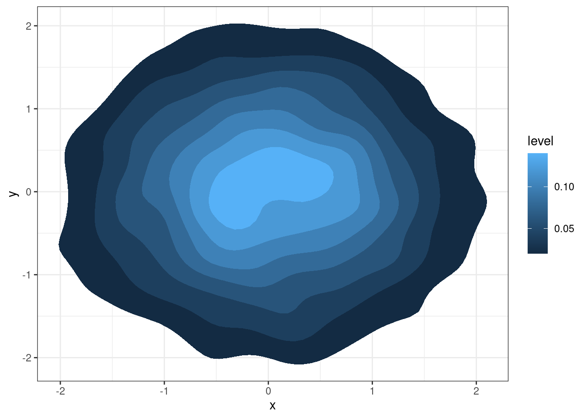
# linie widoczne na wykresach są wynikiem konwersji do pdf, nie będzie ich na wykresach zapisanych np. w formacie .tiff
p + stat_density2d(geom = "tile", contour = FALSE, aes(fill = ..density..))p + stat_density2d(geom = "tile", contour = FALSE, aes(fill = ..density..))+
scale_fill_gradient(low = "lightyellow", high = "darkgreen")p + stat_density2d(geom = "tile", contour = FALSE, aes(fill = ..density..))+
scale_fill_viridis_c()p + stat_density2d(geom = "tile", contour = FALSE, aes(alpha = ..density..))# zamiast kwadratów można użyć sześciokątów, wymaga zainstalowanie pakietu hexbin
library(hexbin)
p + stat_binhex()# dane dyskretne
dane <- round(2*dane)
p <- ggplot(dane, aes(x = x,y = y))
p + geom_point()p + geom_point(alpha = 0.05)# wykorzystanie position = "jitter" i alpha
p + geom_point(position = "jitter", alpha = 0.3)# z wykorzystaniem stat_sum
p + stat_sum()# czasem pomóc może też zmiana skali na logarytmiczną
dane <- data.frame(x = rlnorm(1000), y = rlnorm(1000))
p <- ggplot(dane, aes(x = x,y = y))
p + geom_point()p + geom_point()+scale_y_log10()+scale_x_log10()5.5.3 Wykres wstążka (ribbon)
Użycie geom_ribbon wymaga wstępnego podsumowania danych np. przy użyciu dplyr. W tym wypadku zmiennymi, pod względem których będziemy dzielić dane na grupy będą Diet i Time
Półprzezroczystą wstążkę uzyskujemy dzięki parametrowi alpha.
library(dplyr)
summ <- ChickWeight %>% group_by(Diet, Time) %>%
summarize(mean = mean(weight),
sd = sd(weight),
blad = sd/sqrt(length(weight)),
lower = mean-blad,
upper = mean+blad)## `summarise()` has grouped output by 'Diet'. You can override using the `.groups` argument.p <- ggplot(data = summ, aes(x = Time, y = mean))
p + geom_line(aes(color = Diet)) +
geom_ribbon(aes(ymin = lower, ymax = upper, fill = Diet), alpha = 0.25)5.6 Kolory, osie, panele
5.6.1 Porównywanie - fill, color, shape
Porównanie kilku szczepów można zrobić w ten sam sposób, wybierając w aes - fill=species albo color=species (w zależności od geomu, fill pasuje do histogram i density, color do density, line, point, boxplot itd.)
W histogramie domyślnie dostaniemy słupki ustawione jeden na drugim, jeżeli chcemy słupki ustawione obok siebie należy ustawić parametr position="dodge".
W przypadku boxplot dla kilku cech można pod x podstawić Szczep - otrzymamy wykres zawierający po jednym boxplocie dla jednego szczepu.
p <- ggplot(data = penguins, aes(x = body_mass_g))
# Histogram dla trzech szczepów
p + geom_histogram(aes(fill = species, y = ..density..), binwidth = 75,
position="dodge")## Warning: Removed 2 rows containing non-finite values (stat_bin).
# Gęstość dla trzech szczepów rozróżniona przez color
p + geom_density(aes(color = species))## Warning: Removed 2 rows containing non-finite values (stat_density).
# Gęstość rozróżniona przez fill, półprzezroczystość uzyskujemy parametrem alpha
p + geom_density(aes(fill = species), alpha = 0.25, size = 0.75)## Warning: Removed 2 rows containing non-finite values (stat_density).# Histogramy nałożone na siebie - wymaga ustawienia position = "identity"
p <- ggplot(data = penguins, aes(x = body_mass_g))
p + geom_histogram(aes(y = ..density.., fill = species), binwidth = 75, alpha = 0.45, position = "identity")## Warning: Removed 2 rows containing non-finite values (stat_bin).# Histogram "back to back" wymaga ustawienia w drugim geom_histogram ujemnego y
p <- ggplot(penguins %>% filter(species == 'Gentoo', sex == 'female'),
aes(x = body_mass_g))
p <- p + geom_histogram(aes(y = ..density.., fill = "dodgerblue3"), binwidth = 75)+
geom_histogram(data = penguins %>% filter(species == 'Gentoo', sex == 'male'),
aes(x = body_mass_g, y = -..density.., fill = "coral2"),
binwidth = 75)+
scale_fill_manual(name = "sex", # ręcznie ustawiona legenda
values = c("coral2" = "coral2", "dodgerblue3" = "dodgerblue3"),
labels = c("male","female"))
pp + coord_flip()# shape i linetype
p <- ggplot(penguins, aes(x = body_mass_g, y = bill_length_mm, color = species, shape = species))
p + geom_point()## Warning: Removed 2 rows containing missing values (geom_point).summ <- ChickWeight %>% group_by(Diet, Time) %>%
summarize(mean = mean(weight))## `summarise()` has grouped output by 'Diet'. You can override using the `.groups` argument.p <- ggplot(data = summ, aes(x = Time, y = mean))
p + geom_line(aes(color = Diet, linetype = Diet)) 5.6.2 Zmiana skali kolorów
Możemy zmienić domyślne kolory wykresu korzystając z funkcji scale_colour\fill_sth. Rodzaj funkcji zależy od rodzaju danych - ilościowe albo jakościowe.
Dla danych jakościowych można użyć: scale_color_grey - odcienie szarości, scale_colour_brewer - zawiera zestawy kolorów ze strony Color Brewer, scale_color_viridis_d - zawiera palety viridis, scale_color_hue - pozwala na wybranie kolorów korzystając z palety HCL. Można też ustawić własny zestaw kolorów korzystając z nazw kolorów R albo np. przez RGB, korzystając z scale_colour_manual
Dla danych ilościowych można wybrać: scale_color_gradient - gradient między dwoma kolorami, scale_color_gradient - gradient pomiędzy 3 kolorami, scale_color_gradientn - gradient pomiędzy dowolną liczbą kolorów albo scale_color_viridis_c
# Zmienne jakościowe
# Odcienie szarości
p <- ggplot(data = penguins, aes(x = body_mass_g))
p + geom_histogram(aes(fill = species, y = ..density..), binwidth = 75)+
facet_wrap(~species) + scale_fill_grey()## Warning: Removed 2 rows containing non-finite values (stat_bin).
# można wybrać początek i koniec skali
p + geom_histogram(aes(fill = species, y = ..density..), binwidth = 75)+
facet_wrap(~species) + scale_fill_grey(start = 0.1, end = 0.6)## Warning: Removed 2 rows containing non-finite values (stat_bin).# skala ColorBrewer
library(RColorBrewer)
display.brewer.all()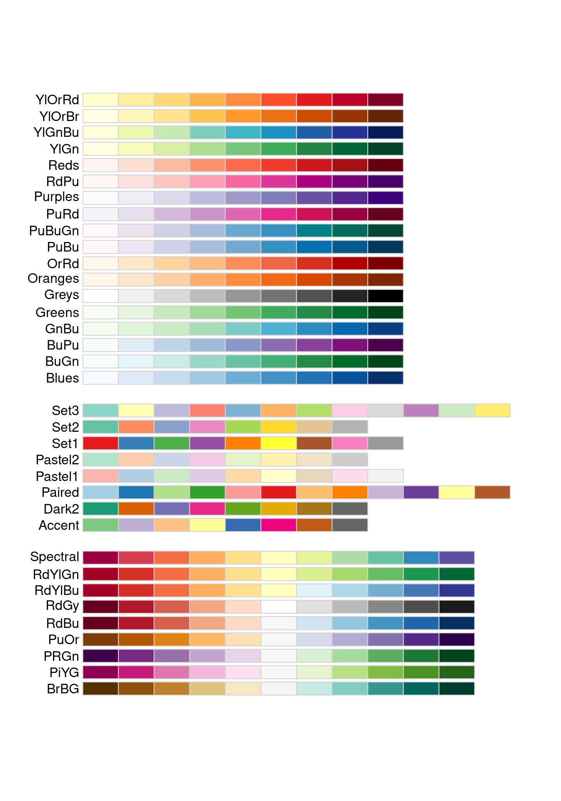
# z użyciem ColorBrewer
p <- ggplot(data = penguins, aes(x = body_mass_g))
p + geom_histogram(aes(fill = species, y = ..density..), binwidth = 75)+
facet_wrap(~species) + scale_fill_brewer()## Warning: Removed 2 rows containing non-finite values (stat_bin).p + geom_histogram(aes(fill = species, y = ..density..), binwidth = 75)+
facet_wrap(~species) + scale_fill_brewer(palette = "Set1")## Warning: Removed 2 rows containing non-finite values (stat_bin).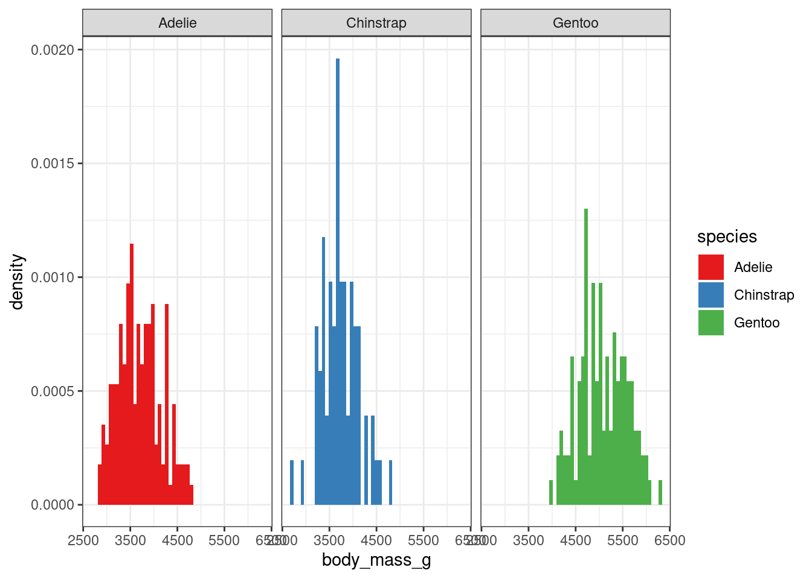
# z użyciem viridis, argument option przyjmuje wartości od A do H
p + geom_histogram(aes(fill = species, y = ..density..), binwidth = 75)+
facet_wrap(~species) + scale_fill_viridis_d(option = 'C')## Warning: Removed 2 rows containing non-finite values (stat_bin).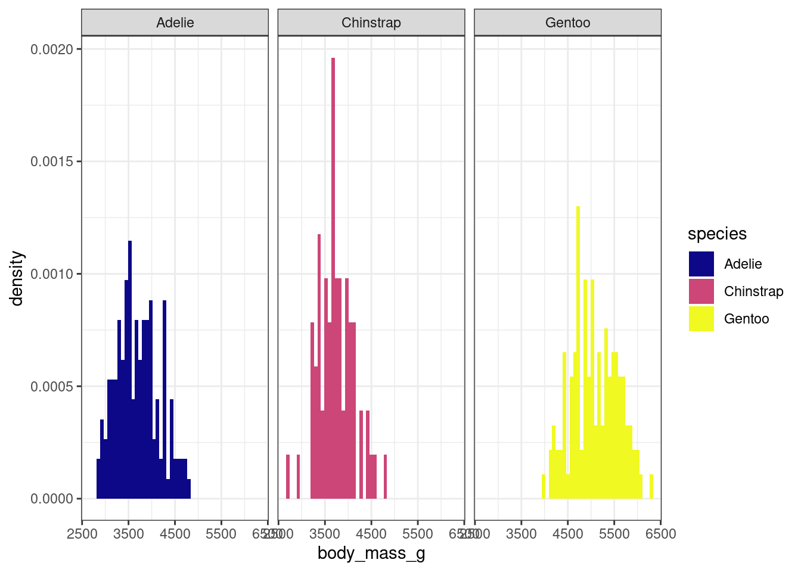
# zakres palety można modyfikować przy pomocy argumentów begin i end
p + geom_histogram(aes(fill = species, y = ..density..), binwidth = 75)+
facet_wrap(~species) + scale_fill_viridis_d(option = 'C', begin = 0.4)## Warning: Removed 2 rows containing non-finite values (stat_bin).# skala z użyciem palety HCL - ustawiamy trzy argumenty: h(zakres barw), c(intensywność) i l(jasność)
p + geom_histogram(aes(fill = species, y = ..density..), binwidth = 75)+
facet_wrap(~species) + scale_fill_hue(h = c(160,320))## Warning: Removed 2 rows containing non-finite values (stat_bin).p + geom_histogram(aes(fill = species, y = ..density..), binwidth = 75)+
facet_wrap(~species) + scale_fill_hue(c = 200)## Warning: Removed 2 rows containing non-finite values (stat_bin).p + geom_histogram(aes(fill = species, y = ..density..), binwidth = 75)+
facet_wrap(~species) + scale_fill_hue(l = 85)## Warning: Removed 2 rows containing non-finite values (stat_bin).
# skala manualna
p + geom_histogram(aes(fill = species, y = ..density..), binwidth = 75)+
facet_wrap(~species) + scale_fill_manual(values = c("forestgreen", "dodgerblue", "coral"))## Warning: Removed 2 rows containing non-finite values (stat_bin).# Zmienne ilościowe
# domyślny gradient
p <- ggplot(penguins)
p <- p + geom_jitter(aes(x = species, y = body_mass_g, color = body_mass_g), size = 3)
# dwa kolory
p + scale_color_gradient(low = "black", high = "gold")## Warning: Removed 2 rows containing missing values (geom_point).# trzy kolory - domyślnie założy, że wartość środkowa to zero, jeżeli jest inaczej to trzeba to podać w midpoint
p + scale_color_gradient2(low = "darkgreen", mid = "coral", high = "gold", midpoint = 4500)## Warning: Removed 2 rows containing missing values (geom_point).# więcej kolorów
p + scale_color_gradientn(colours = c("green", "red", "yellow", "blue"))## Warning: Removed 2 rows containing missing values (geom_point).# ColorBrewer
p + scale_color_distiller(palette = 4)## Warning: Removed 2 rows containing missing values (geom_point).# viridis
p + scale_color_viridis_c(option = 'A')## Warning: Removed 2 rows containing missing values (geom_point).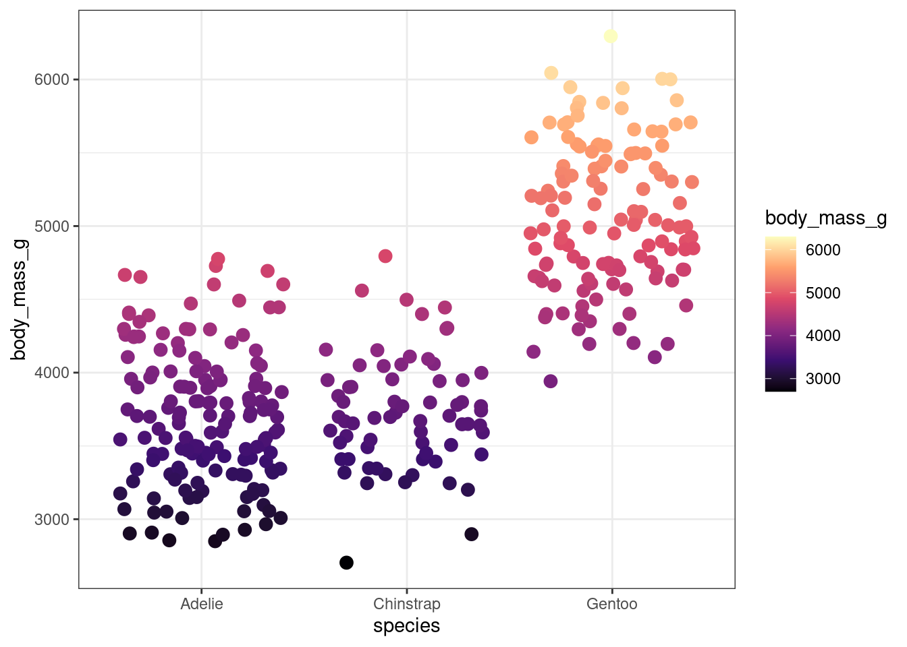
p + scale_color_viridis_c(option = 'D')## Warning: Removed 2 rows containing missing values (geom_point).p + scale_color_viridis_c(option = 'H')## Warning: Removed 2 rows containing missing values (geom_point).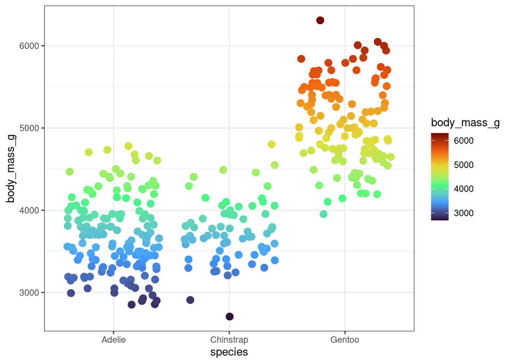 Analogicznie do kolorów można ustawiać skale dotyczące kształtu punktów, stylu linii itp.
5.6.3 Podział wykresu na panele
Innym sposobem na rozróżnianie danych jest użycie paneli (facet).
Dzielimy wykres na części pod względem zmiennej np. Szczepu używając facet_wrap albo facet_grid
facet_grid - rozmieści wykresy w tabeli według jednej lub dwóch zmiennych podanych w formule np. zmienna1 ~ zmienna2
facet_wrap - stworzy “wstążkę” wykresów, końcową liczbę kolumn/wiersz można ustawić argumentami ncol/nrow. W formule po + można dodawać kolejne zmienne np. ~ zmienna1 + zmienna2
p <- ggplot(data = penguins %>% drop_na(), aes(x = body_mass_g))
p + geom_histogram(aes(y = ..density..), binwidth = 75, position = "dodge")+
facet_wrap(~species, ncol = 1)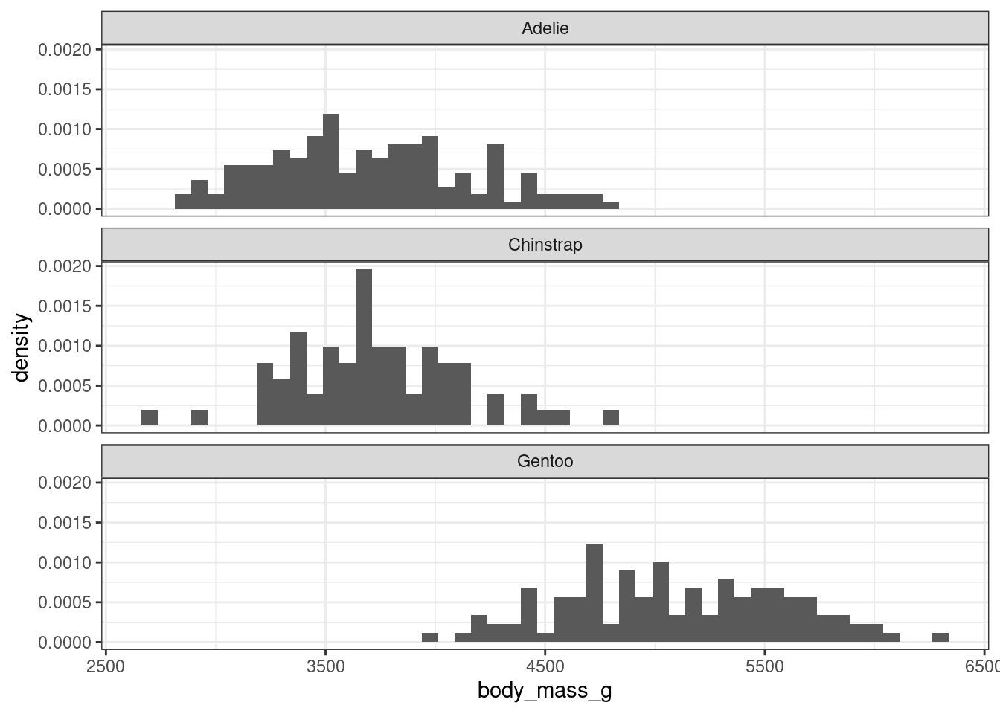
p + geom_density(aes(color = species)) + facet_wrap(~species, ncol = 1)
Oba sposoby można ze sobą dowolnie łączyć.
Analizujemy dane pod względem szczepu i warunków.
p <- ggplot(data = penguins %>% drop_na(), aes(x = body_mass_g))
p + geom_histogram(binwidth = 75, aes(fill = sex), position = "dodge")+
facet_wrap(~species, ncol = 1)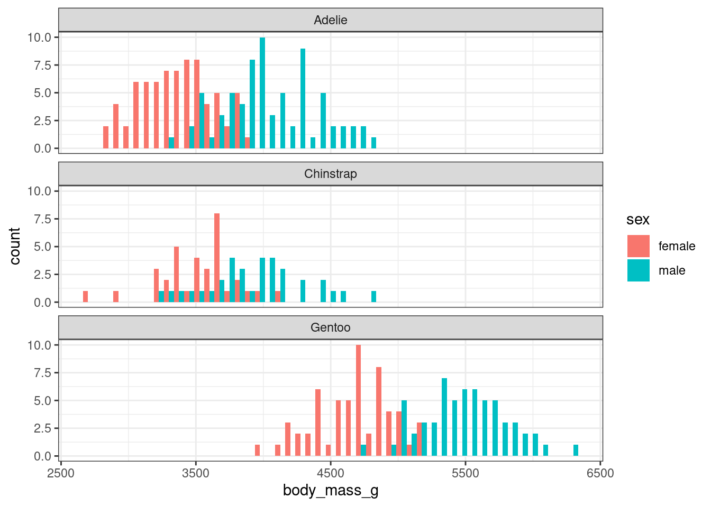
p + geom_density(aes(color = species)) + facet_wrap(~ sex, ncol = 2)
# Histogram podzielony pod względem speciesu i warunków - facet_grid
p + geom_histogram(binwidth = 100) + facet_grid(species ~ sex)# Podobny efekt do facet_frid można osiągnąć stosując facet_wrap z więcej niż jednym sexem
# Kolejne sex dodaje się znakiem +
p + geom_histogram(binwidth = 100) + facet_wrap(~species + sex, ncol = 2)# Osie nie muszą być jednakowe dla wszystkich części
p + geom_histogram(binwidth = 100) + facet_grid(species ~ sex, scales = "free")# Dzielić na części dzięki facet można każdy typ wykresu
p <- ggplot(data = penguins %>% drop_na(), aes(x = species, y = body_mass_g))
p + geom_boxplot(aes(color = species)) + facet_wrap(~ sex)# Boxploty można również rozmiescić według jednego czynnika, a pokolorować według drugiego
p + geom_boxplot(aes(color = sex))5.6.4 Zmiana skali, osi, obracanie wykresu
ggplot2 domyślnie dobiera takie parametry osi, żeby zmieściły się wszystkie dane, ale można je zmieniać używając scale_x_continuous albo scale_y_continuous.
Jeżeli chcemy tylko zmienić limity osi można to zrobić funkcją xlim i ylim.
Trzeba pamiętać, że po zmianie limitów osi najpierw zostaną usunięte wartości, które się nie mieszczą, a potem policzone statystyki, więc takie wykresy jak geom_boxplot, stat_smooth, stat_summary i inne mogą ulec zmianie. Jeżeli chcemy tego uniknąć należy zamiast osi zmieniać układ współrzędnych - coord_cartesian(xlim, ylim).
Przy ich pomocy możemy zmienić np. parametry:
* limits - miejsce startu i końca osi np limits = c(1,10)
* name - nazwa osi
* breaks - miejsca “tick marks”
* labels - nazwy “tick marks”
Podstawowe transformacje osi to scale_y_log10, scale_y_reverse, scale_y_sqrt.
Oś % - należy wpisać labels=percent w scale oraz załadować pakiet scales.
Jeżeli chcemy obrócić wykres o 90 stopni możemy użyć funkcji coord_flip.
# Zmiana osi na przykładzie boxplot
p <- ggplot(data = penguins %>% drop_na(), aes(x = species, y = body_mass_g))
p <- p + geom_boxplot()
# Ustawienie startu i końca osi oraz miejsc podziału
p + scale_y_continuous(limits = c(0,5500), breaks = c(1000, 2000, 4000))## Warning: Removed 28 rows containing non-finite values (stat_boxplot).
# przy pomocy coord_cartesian
p + coord_cartesian(ylim = c(0, 5500))
# Miejsca podziału nie muszą być w równych odstępach i mogą być dowolnie nazwane
p + scale_y_continuous(breaks = c(2000, 3000, 4000, 5000),
labels = c("malo", "lepiej", "ok", "za duzo"),
name = "nazwa")# Wykres obrócony
p + scale_y_continuous(breaks = c(2000, 3000, 4000, 5000),
labels = c("malo", "lepiej", "ok", "za duzo"),
name = "nazwa") + coord_flip()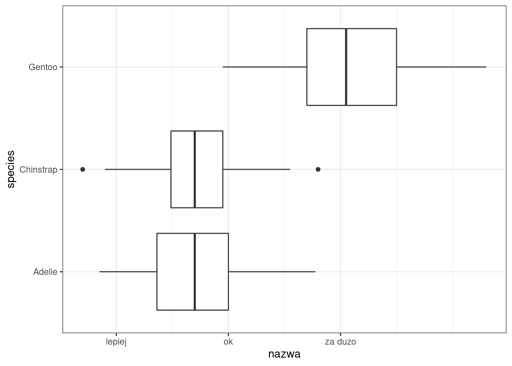
# Skala logarytmiczna
p + scale_y_log10()# Wykres "do góry nogami"
p + scale_y_reverse()library(scales)
# Oś procentowa
p <- ggplot(data = penguins, aes(x = body_mass_g))
p + geom_histogram(binwidth = 100, aes(y = ((..count..)/sum(..count..))))+
scale_y_continuous(labels = percent, name = "Procent")## Warning: Removed 2 rows containing non-finite values (stat_bin).5.7 Motyw (theme)
W pakiecie ggplot2 jest dostępnych kilka różnych motywów. Domyślnie ustawiony jest theme_grey, inne dostępne to theme_bw, theme_minimal, theme_classic, theme_linedraw, theme_light. W pakiecie ggthemes znajdują się dodatkowe wersje motywów, nawet (o zgrozo) theme_excel ;) Inny pakiet zawierający gotowe motywy to ggthemr - można go pobrać z GitHub.
Tytuł do wykresu możemy dodać korzystając z funkcji ggtitle. Nazwy osi też można szybko zmienić przy pomocy xlab i ylab. Dalsze opisy można dodać korzystając z funkcji labs np. tag albo caption.
p <- ggplot(data = penguins %>% drop_na(), aes(x = body_mass_g))
p <- p + geom_histogram(binwidth = 100, aes(fill = sex), position = "dodge")+
facet_wrap(~species, ncol = 1)
p
p + theme_bw()
p + theme_classic()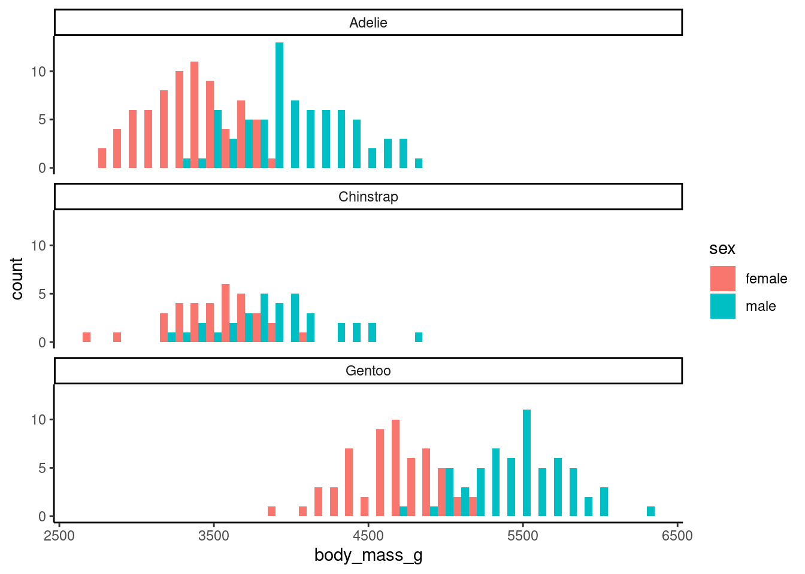
p + theme_minimal()p + ggtitle("Pingwiny") + xlab("Waga") + labs(tag = 'a.')Legendę wykresu można modyfikować przy pomocy guide_legend wewnątrz funkcji scale_fill_discrete , scale_colour_discrete itp. Dostępne parametry to m.in. title, title.position, label.position, direction, nrow i ncol legendy. Modyfikacje są możliwe też bezpośrednio w funkcji theme albo samodzielnie ustawiając przez scale_color_manual.
p + scale_fill_discrete(guide = guide_legend(title = "nazwa",
title.position = "left",
label.position = "bottom", ncol = 2))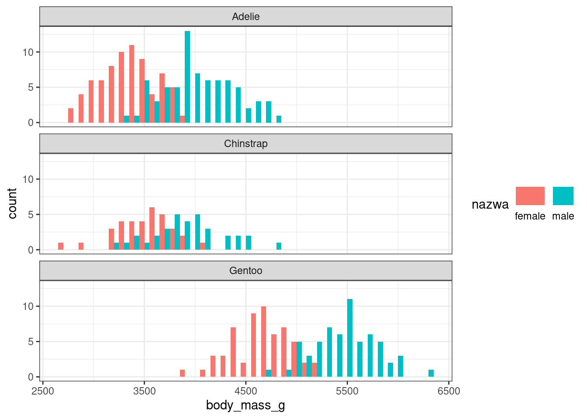
Można również modyfikować osobno każdy element wykresu np. czcionkę, kolor, linie, tło itd. przy pomocy funkcji theme, dużo przykładów znajduję się na stronie.
Można modyfikować jednocześnie wszystkie elementy danego rodzaju np. tekst przy pomocy text = element_text() albo pojedyncze części wykresu np. tytuł - plot.title=element_text().
p + theme(text = element_text(size = 22, face = "italic", color = "darkblue"))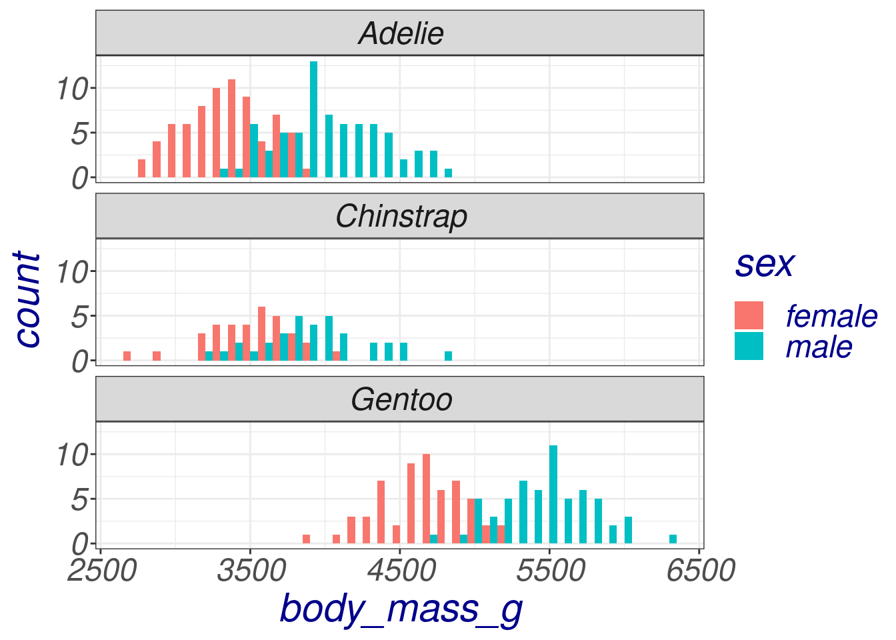
p + ggtitle("Tytul wykresu")+theme(plot.title = element_text(color = "red",
face = "bold", size = 30, angle = 350, hjust = 0.2, vjust = 0.8))p + theme(panel.background = element_rect(fill = "lightyellow"),
panel.grid.major = element_line(color = "snow4"),
strip.background = element_rect(fill = "lightblue3"))
Jeżeli chcemy przygotować kilka pasujących do siebie wykresów możemy zapisać swój motyw i potem dodawać go do kolejnych wykresów.
motyw <- theme(panel.background = element_rect(fill = "lightyellow"),
panel.grid.major = element_line(color = "snow4"),
strip.background = element_rect(fill = "lightblue3"))
p
p + motyw
5.8 Różne
5.8.1 Łączenie wykresów
Pakiet ggplot2 jest oparty o system wyświetlania kontrolowany przez pakiet grid (inny niż grafika z podstawowego R). Korzystając z funkcji viewport można z dużą dokładnością rozmieścić kilka wykresów różnych rozmiarów obok siebie, jeden na drugim itp.
W funkcji viewport ustawiamy parametry width i height oznaczające wymiary wykresu. Wykres zajmujący całą powierzchnię ma wymiary 1x1 oraz x i y oznaczające współrzędne środka wykresu np. x=0.5, y=0.5 da wykres umiejscowiony na samym środku.
Dużo łatwiejszym sposobem jest wykorzystanie pakietu patchwork. Pozwala on na ułożenie wykresów na jednej stronie tlyko przy użyciu +, | i /. Można też dokładnie ustalać rozmieszczenie wykresów, więcej na stronie autora pakietu
# Przypisujemy wykresy do zmiennych
p1 <- ggplot(data = penguins %>% drop_na(), aes(x = body_mass_g))
p1 <- p1 + geom_density(aes(color = species)) + facet_wrap(~sex, ncol = 2)
p2 <- ggplot(data = ChickWeight, aes(x = Time, y = weight, color = Diet))
p2 <- p2 + geom_point(size = 0.75) + stat_smooth(method = "lm")
p3 <- ggplot(mtcars) + geom_boxplot(aes(gear, disp, group = gear))
# z wykorzytsaniem patchwork
library(patchwork)
p1 + p2 + p3## `geom_smooth()` using formula 'y ~ x'
p1 | p2 / p3## `geom_smooth()` using formula 'y ~ x'(p1 | p2 )/ p3## `geom_smooth()` using formula 'y ~ x'(p1 | p2 )/ p3 + plot_layout(guides = 'collect')## `geom_smooth()` using formula 'y ~ x'layout <- "
##BBBB
AACCCC
AACCCC
"
p1 + p2 + p3 +
plot_layout(design = layout)## `geom_smooth()` using formula 'y ~ x'# Z wykorzystaniem pakietu grid
library(grid)
p1 <- p1 + theme(text=element_text(size=10))
p2 <- p2 + theme(text=element_text(size=10), legend.position="bottom")
# Ustawiamy parametry viewportóW
vp1 <- viewport(width=1, height=0.5, x=0.5, y=0.75)
vp2 <- viewport(width=0.4, height=0.5, x=0.2, y=0.25)
vp3 <- viewport(width=0.6, height=0.5, x=0.7, y=0.25)
# Wyświetlamy wykresy w ospowiednich viewportach
print(p1, vp=vp1)
print(p2, vp=vp2)## `geom_smooth()` using formula 'y ~ x'print(p3, vp=vp3)5.8.2 Ten sam wykres różne dane
Istnieje kilka sposobów na przygotowanie kilku takich samych wykresów, różniących się jedynie danymi.
Można oczywiście ręcznie podmienić wartość parametru data na inny albo skorzystać z wbudowanego w pakiet ggplot2 operatora - %+%.
Alternatywą jest też napisanie własnej funkcji przygotowującej konkretny wykres. Zaletą tego rozwiązania jest możliwość wpisania do funkcji odpowiednich argumentów dostosowujących wykres do konkretnej sytuacji.
# Przykładowe zestawy danych
a <- data.frame(x = rnorm(1000))
b <- data.frame(x = rlnorm(1000))
c <- data.frame(x = runif(1000, 0, 5))
# Przygotujemy wykres składajacy się z kilku elementów dla danych a
p <- ggplot(data = a, aes(x = x))
p <- p + geom_histogram(binwidth = 0.25, fill = "blue4", aes(y = (..count../sum(..count..))))+
scale_y_continuous(labels = percent, name = "Procent")+
xlab("Wartosc")+
ggtitle("Przykladowy rozklad")+
theme(panel.background=element_rect(fill = "white"), text = element_text(size = 14),
axis.text = element_text(color = "red4"))
p
# taki sam wykres dla danych b
p %+% b# i c ;)
p %+% c5.9 Rozszeżenia ggplot2
W ostatnich latatach powstało bardzo wiele pakietów rozbudowujących możliwości ggplot2. Część z nich została już wspomniana wcześniej np. ggbeeswarm lub patchwork. Tutaj znajdą się inne, które również mogą okazać się przydatne. Większość dobrze udokumentowanych pakietów można znaleźć na stronie ggplot2 extensions - gallery.
5.9.1 Pakiet GGally
Pakiet GGally stanowi rozszeżenie ggplot2, zawiera kilka szablonóe i pozwala na stworzenie wykresów niedostępnych w wersji podstawowej np. macierz korelacji, wykres pokazujący sieć albo macierz wykresów dla ramki danych.
5.9.1.1 Macierz wykresów - ggpairs
Funkcja ggpairs pozwala na szybką analizę danych. Jej argumentem jest ramka danych i dla każdej pary zmiennych zostanie narysowany wykres pozkazujący zalezność pomiędzy nimi. Wykresy są inne w zależności od rodzaju zmiennych - liczbowe lub kategoryczne. Dla pary zmiennych liczbowych zostanie narysowany wykres rozrzutu i obliczony współczynnik korelacji. Dla pary mieszanej (liczbowo-kategoryczna) narysuje wykres pudełkowy i histogram, dla dwóch zmiennych kategorycznych wykresy słupkowe. Rodzaje rysowanych wykresów można zmieniać, można też do macierzy dodać własny wykres.
library(GGally)## Registered S3 method overwritten by 'GGally':
## method from
## +.gg ggplot2ggpairs(penguins %>% drop_na())## `stat_bin()` using `bins = 30`. Pick better value with `binwidth`.## `stat_bin()` using `bins = 30`. Pick better value with `binwidth`.
## `stat_bin()` using `bins = 30`. Pick better value with `binwidth`.
## `stat_bin()` using `bins = 30`. Pick better value with `binwidth`.
## `stat_bin()` using `bins = 30`. Pick better value with `binwidth`.
## `stat_bin()` using `bins = 30`. Pick better value with `binwidth`.
## `stat_bin()` using `bins = 30`. Pick better value with `binwidth`.
## `stat_bin()` using `bins = 30`. Pick better value with `binwidth`.
## `stat_bin()` using `bins = 30`. Pick better value with `binwidth`.
## `stat_bin()` using `bins = 30`. Pick better value with `binwidth`.
## `stat_bin()` using `bins = 30`. Pick better value with `binwidth`.
## `stat_bin()` using `bins = 30`. Pick better value with `binwidth`.
## `stat_bin()` using `bins = 30`. Pick better value with `binwidth`.
## `stat_bin()` using `bins = 30`. Pick better value with `binwidth`.
## `stat_bin()` using `bins = 30`. Pick better value with `binwidth`.
# zmiana rodzaju wykresu np. górny panel pokaże wykres gęstości zamiast korelacji
# i kropkowy zamiast boxplota
ggpairs(penguins %>% drop_na(), upper = list(continuous = "density", combo = "dot"))## `stat_bin()` using `bins = 30`. Pick better value with `binwidth`.
## `stat_bin()` using `bins = 30`. Pick better value with `binwidth`.
## `stat_bin()` using `bins = 30`. Pick better value with `binwidth`.
## `stat_bin()` using `bins = 30`. Pick better value with `binwidth`.
## `stat_bin()` using `bins = 30`. Pick better value with `binwidth`.
## `stat_bin()` using `bins = 30`. Pick better value with `binwidth`.
## `stat_bin()` using `bins = 30`. Pick better value with `binwidth`.
## `stat_bin()` using `bins = 30`. Pick better value with `binwidth`.
## `stat_bin()` using `bins = 30`. Pick better value with `binwidth`.
## `stat_bin()` using `bins = 30`. Pick better value with `binwidth`.
## `stat_bin()` using `bins = 30`. Pick better value with `binwidth`.
## `stat_bin()` using `bins = 30`. Pick better value with `binwidth`.
## `stat_bin()` using `bins = 30`. Pick better value with `binwidth`.
## `stat_bin()` using `bins = 30`. Pick better value with `binwidth`.
## `stat_bin()` using `bins = 30`. Pick better value with `binwidth`.
# wykres pokolorowany według jednej z kategorii
ggpairs(penguins %>% drop_na(), mapping = ggplot2::aes(color = species))## `stat_bin()` using `bins = 30`. Pick better value with `binwidth`.
## `stat_bin()` using `bins = 30`. Pick better value with `binwidth`.
## `stat_bin()` using `bins = 30`. Pick better value with `binwidth`.
## `stat_bin()` using `bins = 30`. Pick better value with `binwidth`.
## `stat_bin()` using `bins = 30`. Pick better value with `binwidth`.
## `stat_bin()` using `bins = 30`. Pick better value with `binwidth`.
## `stat_bin()` using `bins = 30`. Pick better value with `binwidth`.
## `stat_bin()` using `bins = 30`. Pick better value with `binwidth`.
## `stat_bin()` using `bins = 30`. Pick better value with `binwidth`.
## `stat_bin()` using `bins = 30`. Pick better value with `binwidth`.
## `stat_bin()` using `bins = 30`. Pick better value with `binwidth`.
## `stat_bin()` using `bins = 30`. Pick better value with `binwidth`.
## `stat_bin()` using `bins = 30`. Pick better value with `binwidth`.
## `stat_bin()` using `bins = 30`. Pick better value with `binwidth`.
## `stat_bin()` using `bins = 30`. Pick better value with `binwidth`.5.9.1.2 Macierz korelacji
Tworzenie macierzy korelacji jest opisane w dalszej części z wykorzystaniem pakietu corrplot, ale możliwe jest też użycie ggplot2.
ggcorr(penguins)## Warning in ggcorr(penguins): data in column(s) 'species', 'island', 'sex' are
## not numeric and were ignored# z wpisanymi wartościami korelacji
ggcorr(penguins, label=TRUE, label_color="black", label_round = 2)## Warning in ggcorr(penguins, label = TRUE, label_color = "black", label_round
## = 2): data in column(s) 'species', 'island', 'sex' are not numeric and were
## ignored